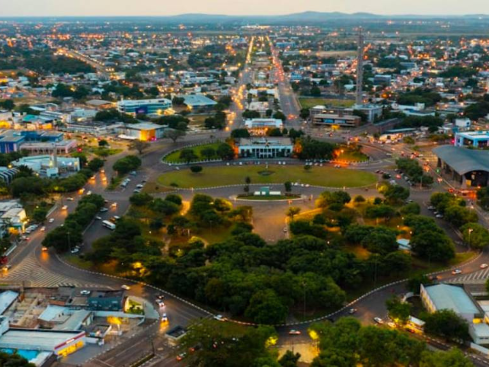

Roraima é o estado mais ao norte do Brasil, localizado na região Norte e conhecido por suas paisagens naturais e grande diversidade cultural. Sua capital é Boa Vista, a única capital brasileira totalmente localizada no hemisfério Norte. O estado possui forte presença de áreas indígenas e extensas regiões de savana e floresta amazônica. Entre seus principais atrativos está o Monte Roraima, uma das formações rochosas mais famosas da América do Sul, que atrai turistas e aventureiros do mundo inteiro. A economia de Roraima é baseada na agropecuária, comércio e serviços, enquanto sua cultura reúne influências indígenas, nordestinas e venezuelanas.
